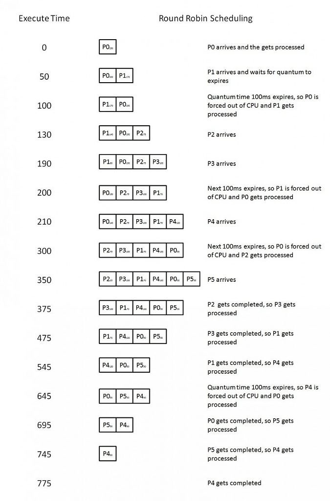
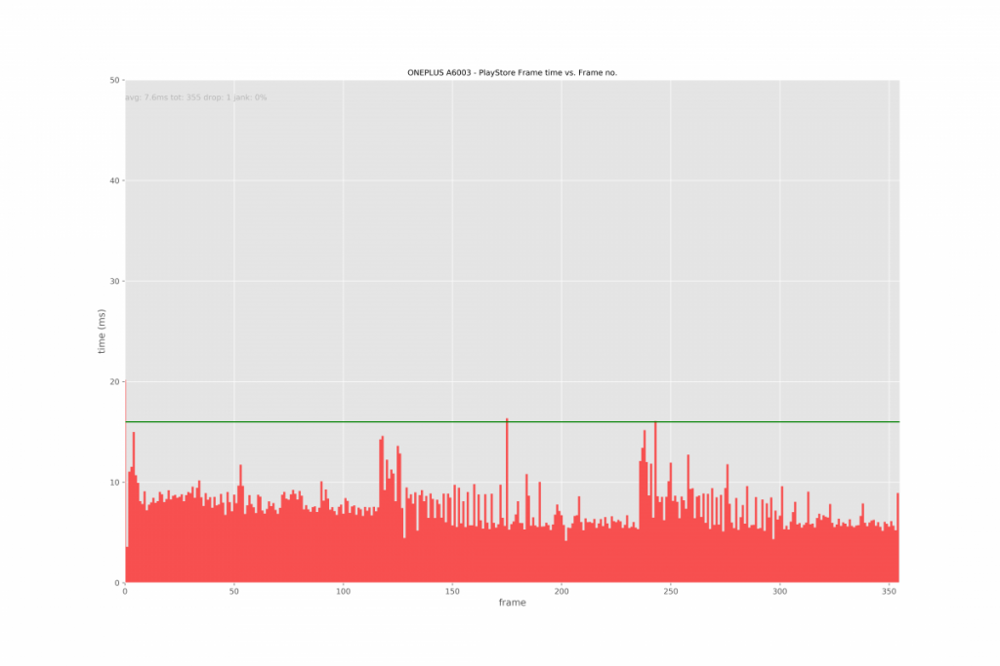
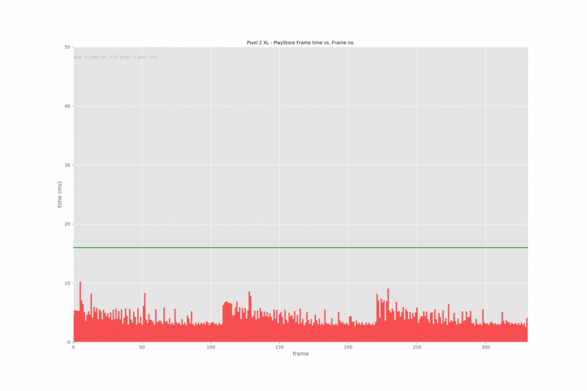
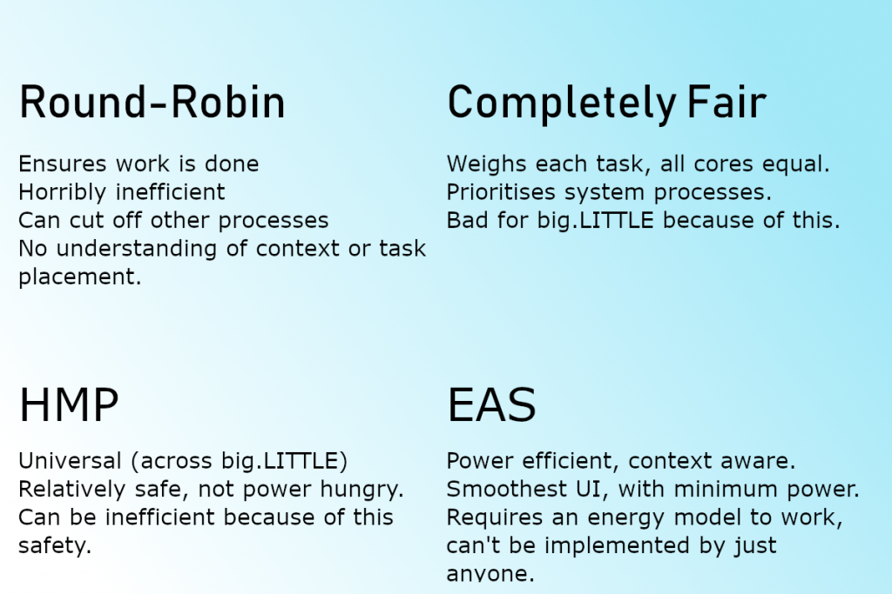

The Evolution of the Linux Load Schedulers
Round-Robin Scheduling
Round robin processing is a simple concept to explain and understand, and an even simpler one to grasp its disadvantages. Round-robin uses time slicing to allocate time to each process. Let’s assume we have four processes running on our computer.
- Process A
- Process B
- Process C
- Process D
Now, let’s do the job of the round-robin scheduler. We will allocate 100 milliseconds (time-slicing) to each process before moving on to the next. This means Process A can take 100 milliseconds to do its processing, then it moves to Process B and so on. If an application’s job takes 250 milliseconds to do, it will need to go through this process 3 times just to finish its work! Now scale this across different cores, so that Process A and Process B are allocated to core 1, and Process C and Process D are allocated to core 2. This was replaced by O(n) scheduling (which was like round-robin, but using epochs and allowing dynamic allocation of time), then O(1) scheduling (minimized overhead, unlimited process support), then finally the Completely Fair Scheduler (CFS). CFS was merged into the Linux kernel version 2.6.23 in October 2007. It has been overhauled since and is still the default scheduler in Linux systems.

Completely Fair Scheduler
The Completely Fair Scheduler has existed in Android since its inception and is used on non-big.LITTLE devices. It uses an intelligent algorithm to determine processing order, time allocated etc. It is an example of a working implementation of the well-studied scheduling algorithm called “weighted fair queueing.” This basically focuses on providing priority to system processes and other high priority processes running on the machine. If it were to run on a big.LITTLE device, all cores would be perceived as equal. This is bad, as low power cores may be forced to run intensive applications, or even worse, the opposite may occur. The decoding for listening to music may be done on the big core, for example, increasing power consumption needlessly. This is why we need a new scheduler for big.LITTLE, one which can actually recognise and utilise the difference in cores in a power efficient manner. That’s where Heterogeneous Multi-Processing (HMP) comes in, the standard load scheduler most Android phones are running now.
Heterogeneous Multi-Processing
This is the standard load scheduler for any big.LITTLE device released in recent years, other than the Google Pixel. HMP makes use of the big.LITTLE architecture, delegating low priority, less intensive work to the little cores which consume less power. HMP is “safe” wherein it knows what should go to the big cores and what should go to the little cores, without making mistakes. It just works and requires a lot less effort to set up on the development side than something like EAS, which we’ll get into in a moment. HMP is just an extension of CFS to make it power aware.
HMP doesn’t take guesses, nor does it predict future processes. This is good but is why the device cannot be as fluid as those running EAS and is also why it consumes slightly more battery. This, finally, brings us to Energy Aware Scheduling (EAS), which I firmly believe is the future in ROM and kernel development as more OEMs adopt it.
Energy Aware Scheduling
Energy Aware Scheduling (EAS) is the next big thing that users on our forums are talking about. If you use a OnePlus 3 (or a Google Pixel, obviously) you’ve definitely heard about it in the forums. It launched into the mainstream with the Qualcomm Snapdragon 845, so if you have one of these devices you already have an EAS-enabled smartphone. EAS in the form of kernels such as RenderZenith and ROMs such as VertexOS and PureFusion were taking the OnePlus 3 forums by storm in its prime. Of course, the Google Pixel also comes with EAS. With the promises of improved battery life and better performance, what’s the catch?
Energy Aware Scheduling is not as simple as it is not universal to every device like CFS or HMP. EAS requires an understanding of the processor it is running on, based off of an energy model. These energy models are made by teams of engineers constantly testing and working to give an optimal performance. As the Snapdragon 820 and 821 are basically the same, custom kernels on the OnePlus 3 uses the Google Pixel energy model. Devices with the Snapdragon 845 can utilise EAS, and the OnePlus 6 does to some degree. It’s not as tuned as a Google Pixel device would be, but it gets the job done. Here’s an example of how, despite the OnePlus 6 having a better processor with EAS, the Pixel 2 XL still beats it in smoothness. Both of these images were taken from our speed-oriented review of the OnePlus 6.


If you have trouble understanding the graphs, you can take a look at the image below for guidance. Anything exceeding the green line indicates dropped frames and, in the worst cases, noticeable stuttering.
The OnePlus 6 implementation of EAS is interesting, as it doesn’t appear to be a fully-fledged implementation like you’d find on a Google Pixel with the same SoC. The scheduler tunables don’t make much sense either, so that probably explains why it’s not as performance efficient as you’d expect. It’s extremely conservative in power consumption, with the system prioritising the low power cores for the majority of the work.
Tunables are simply a set of parameters that are passed to the CPU governor, which changes how the governor reacts to certain situations in terms of frequency. The scheduler then decides where it places tasks on different processors. The OnePlus 6’s tunables are set to prioritise work on low-powered cores. It also doesn’t help that the Google Pixel 2 has a huge amount of input boost, keeping all 8 cores online all the time. Google also uses an interrupt balancer which helps to remove frame drops and improve performance.
So how does EAS work? Why is it so efficient only in certain conditions?
Energy Aware Scheduling introduces the need to use an energy model, and as mentioned above requires a lot of testing and work to make it perfect. EAS attempts to unify three different core parts of the kernel which all act independently, and the energy model helps to unify them.
- Linux scheduler (CFS, mentioned above)
- Linux cpuidle
- Linux cpufreq
Unifying all 3 parts under the scheduler and calculating them together gives a potential for energy saving, as calculating them together allows them to be as efficient as possible. CPUIdle tries to decide when the CPU should go into an idle mode, while CPUFreq tries to decide when to ramp up or down the CPU. Both of these modules have the primary goal of saving energy. Not only that, it then categorizes processes into four cgroups, being top-app, system-background, foreground, and background. Tasks due to be processed are placed into one of these categories, and then the category is given CPU power and the work is delegated over different CPU cores. top-app is the highest priority of completion, followed by foreground, background, and then system-background. Background technically has the same priority as system-background, but system-background usually also has access to more little cores. In effect, Energy Aware Scheduling is taking core parts of the Linux kernel and unifying it all into one process.
When waking the device, EAS will choose the core in the shallowest idle state, minimising the energy needed to wake the device. This helps to reduce the required power in using the device, as it will not wake up the large cluster if it doesn’t need to. Load tracking is also an extremely crucial part of EAS, and there are two options. “Per-Entity Load Tracking” (PELT) is usually used for load tracking, the information is then used to decide frequencies and how to delegate tasks across the CPU. “Window-Assisted Load Tracking” (WALT) can also be used and is what’s used on the Google Pixel. Many EAS ROMs on our forums, such as VertexOS, opt to use WALT. Many ROMs will release two versions of the kernel with WALT or PELT, so it’s up to the user to decide. WALT is more bursty, with high peaks in CPU frequency while PELT tries to remain more consistent. The load tracker doesn’t actually affect the CPU frequency, it just tells the system what the CPU usage is at. A higher CPU usage requires a higher frequency and so a consistent trait of PELT is that it causes the CPU frequency to ramp up or down slowly. PELT does tend to stray towards higher CPU load reporting, so it may provide higher performance at a higher battery cost. Nobody can really say at this point in time which load tracking system is better, however, as both load tracking methods are getting continually patched and refined.
Either way, it’s obvious that, regardless of the load tracking method used, there is an increase in efficiency. Rather than just processing tasks on any processor, the task is analyzed and the amount of energy required to run it is estimated. This clever task placement means that tasks get completed in a much more efficient manner while also making the system quicker as a whole. EAS is all about getting the smoothest UI possible with minimal power usage. This is where other external components such as schedtune come into play.
Schedtune is defined in each cgroup by two tunables which ensure finer control over the tasks to be completed. It doesn’t just control the spread out of tasks over multiple CPUs, but also if the perceived load should be inflated in order to ensure time-sensitive tasks are completed quicker. This way, foreground applications and services that the user is availing of won’t slow down and cause unnecessary performance issues.
While Energy Aware Scheduling is the next big thing, it can also be argued it’s already here and has been for a while. With more and more devices hitting the mainstream with Energy Aware Scheduling, a new age of mobile processing efficiency is here.
The Pros and Cons of Round-Robin, CFS, HMP and EAS
While my graphics skills are sub-par, I have thrown together an image which should summarize what the pros and cons of each of these schedulers are.
